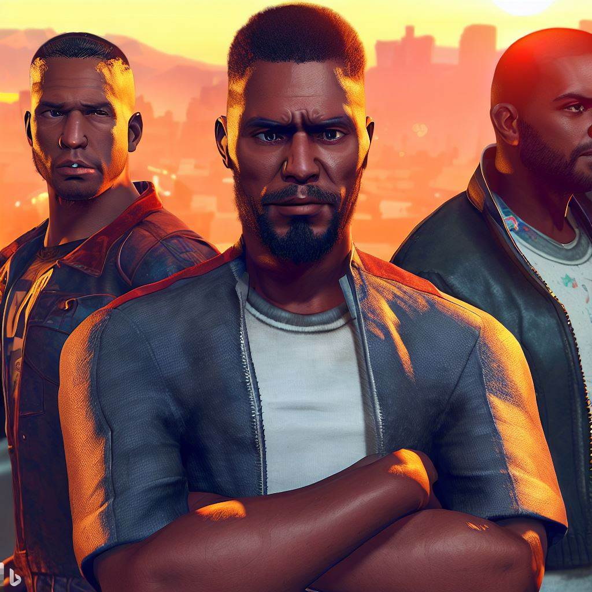
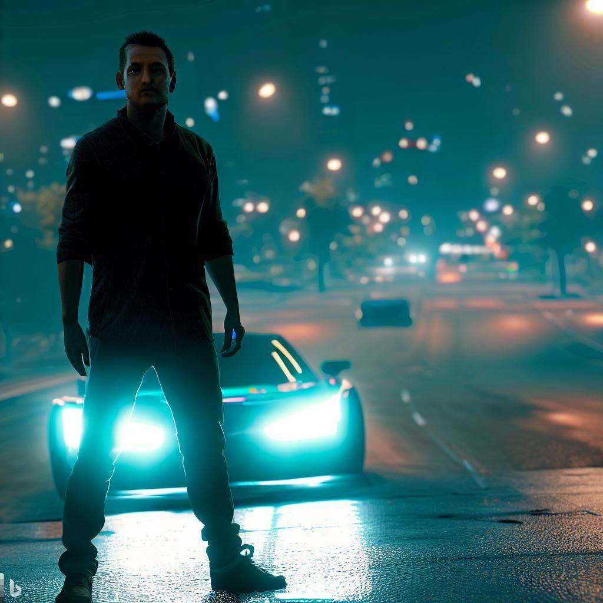

O grze GTA 5
Grand Theft Auto V (GTA 5) to otwarty świat akcji i przygody wideo, stworzony przez Rockstar North i wydany przez Rockstar Games. Gra została wydana 17 września 2013 roku na PlayStation 3 i Xbox 360, a 18 listopada 2014 roku na PlayStation 4 i Xbox One. Akcja gry toczy się w fikcyjnym stanie San Andreas, który jest oparty na Południowej Kalifornii, a gracze mają swobodę eksplorowania świata i wykonywania misji we własnym tempie.

Rozgrywka
GTA 5 posiada trzech grywalnych protagonistów - Michaela De Santę, Franklina Clintona i Trevora Philipsa - każdy z nich ma swoje unikalne umiejętności i zdolności. Gracze mogą przełączać się między trzema postaciami w dowolnym momencie gry, zarówno w trakcie misji, jak i poza nimi. Gra zawiera również tryb wieloosobowy, zwany Grand Theft Auto Online, który umożliwia graczom tworzenie i dostosowywanie swojej własnej postaci oraz eksplorowanie świata GTA 5 z innymi graczami.

Odbiór i nagrody
GTA 5 otrzymało pozytywne recenzje po premierze, a wiele recenzentów chwaliło otwarty świat gry, fabułę i postacie. Gra zdobyła wiele nagród, w tym tytuł Gry Roku w kilku publikacjach. Gra była również sukcesem komercyjnym, sprzedając ponad 140 milionów kopii na całym świecie do 2021 roku, co czyni ją jedną z najlepiej sprzedających się gier wideo wszech czasów.
Ciekawostki
- GTA 5 była najdroższą grą wideo, jaką kiedykolwiek wyprodukowano w czasie premiery, jej koszt produkcji wyniósł około 265 milionów dolarów.
- Ścieżka dźwiękowa gry zawiera muzykę z ponad 20 różnych stacji radiowych, z gatunkami muzyki od hip-hopu do rocka i muzyki elektronicznej.
- GTA 5 zawiera wiele odniesień do kultury popularnej, w tym filmów, programów telewizyjnych i innych gier wideo.